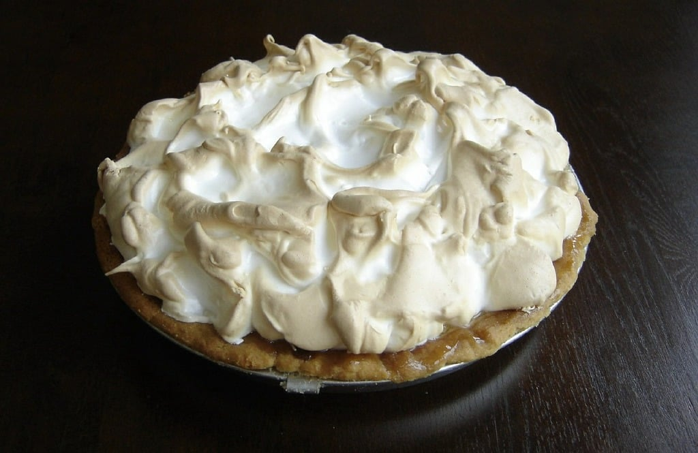

Photo by: picryl CC PDM 1.0 https://creativecommons.org/publicdomain/mark/1.0/
Rate This Recipe
Conversion
=
Ingredients:
For the Crust
1½ cups finely crushed graham cracker crumbs
⅓ cup packed light brown sugar
4 tablespoons melted unsalted butter
For the Filling
2 14-oz cans sweetened condensed milk
1 cup plain Greek yogurt
1 tablespoon grated lime zest
¾ cup fresh lime juice
For the Topping
1 cup cold heavy cream
2 tablespoons confectioners' sugar
1 teaspoon grated lime zest
8 to 10 thin lime slices
Equipment:
Mixing bowl
Fork
Mesuring cups
Pie pan
Wisk
Electric Mixer
Directions:
For the Crust
Preheat oven to 375 °F and set an oven rack in the middle position.
In a medium bowl, combine the graham cracker crumbs, brown sugar, and melted butter; stir with a fork first, and then your hands until the mixture is well combined. Using your fingers and the bottom of a glass or dry measuring cup, press the crumbs firmly into the bottom and up the sides of a 9 x 1.5-inch pie pan. The crust should be about ¼-inch thick.
Bake for 10 minutes, until just slightly browned. Let the crust cool on a wire rack.
For the Filling
Lower the oven temperature to 350°F.
In a large bowl, whisk together the sweetened condensed milk, yogurt, lime zest, and lime juice. Pour the thick mixture into the warm graham cracker crust. Bake for 15 minutes, until the filling is almost set; it should wobble a bit. Let cool at room temperature for 30 minutes, then place in the refrigerator to chill thoroughly, about 3 hours.
For the Topping
In the bowl of an electric mixer, beat the heavy cream until soft peaks form. Add the confectioners’ sugar and beat until medium peaks form. Top the pie with the whipped cream. Decorate with the lime zest and lime slices. Store the pie in the refrigerator until ready to serve. Slice the pie into wedges, wiping your knife clean between slices, and serve cold.